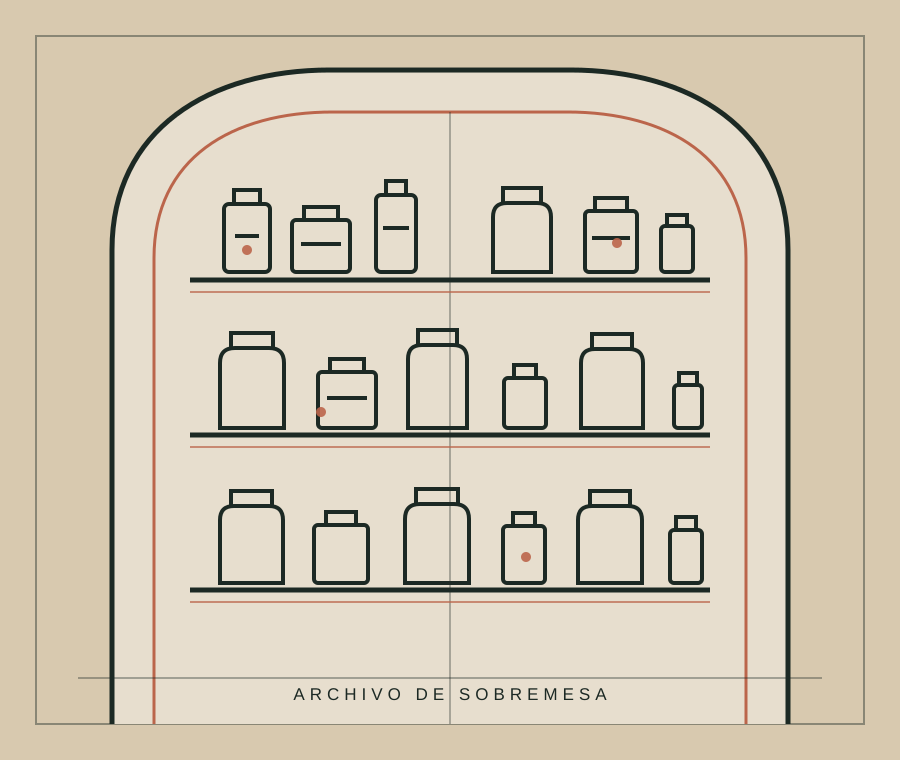
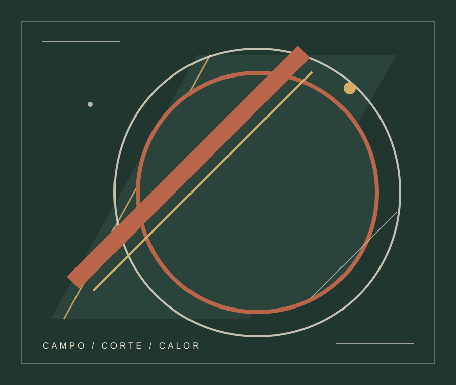

01
COCINA ESPAÑOLA · TAPAS
La Favorita
El imaginario de los ultramarinos y la sobremesa.
Explorar La Favorita
DEMO INTERNA · BOGOTÁ
ANTES DE ELEGIR / DOS TERRITORIOS
Dos propuestas gastronómicas vinculadas públicamente a Koldo Miranda. Elige qué historia quieres conocer primero.
COCINA ESPAÑOLA · TAPAS
El imaginario de los ultramarinos y la sobremesa.
Explorar La FavoritaREFERENCIA PÚBLICA · 2026
Una asociación pública con la tortilla vaga.
Explorar Gallinas y ValientesIlustraciones originales de demo · no representan los locales ni sus platos.
Elegir una ruta no confirma carta, horarios ni disponibilidad.

Metáfora editorial del imaginario de ultramarinos; no representa el local.
DESPUÉS DE ELEGIR / M03
Cocina española y tapas; un territorio de ultramarinos descrito en fuentes públicas.
ICEX clasifica La Favorita como cocina española y tapas. Crónicas de 2024 describen el concepto desde el imaginario de los ultramarinos.
E001 · E003 · E004
La documentación consultada no confirma la carta actual, platos disponibles, precios, horarios ni disponibilidad.
M02 / MAPA DE DECISIONES
Una comparación para orientarte, no para recomendarte una opción. Cada concepto conserva su propia historia y su propio estado de verificación.
01 · LA FAVORITA
02 · GALLINAS Y VALIENTES
No se comparan precios, carta, horarios, dirección exacta, disponibilidad ni servicios: no están confirmados en la documentación disponible.
M03 / LA FAVORITA
Cocina española y tapas; un territorio de ultramarinos descrito en fuentes públicas.
QUÉ ESTÁ DOCUMENTADO
Foods and Wines from Spain / ICEX clasifica La Favorita como cocina española y tapas. Crónicas periodísticas de 2024 describen el concepto desde el imaginario de los ultramarinos y la tradición española.
QUÉ FALTA POR CONFIRMAR
La documentación consultada no confirma la carta actual, platos disponibles, precios, horarios ni disponibilidad. Los platos mencionados en prensa corresponden a coberturas históricas, no a una carta vigente.
M04 / GALLINAS Y VALIENTES
Una asociación pública con la tortilla vaga, presentada con un alcance de verificación limitado.

QUÉ ESTÁ DOCUMENTADO
Única FM (06.11.2026) presenta Gallinas y Valientes como nueva propuesta gastronómica de Koldo Miranda y la asocia a un homenaje a la tortilla vaga de Sacha Hormaechea. La nota disponible se limita al titular y la bajada.
E009 aporta contexto sobre el antecedente de Sacha; no demuestra qué sirve Gallinas y Valientes ni que replique esa receta.
QUÉ FALTA POR CONFIRMAR
La nota no confirma receta, ingredientes, carta, precios, dirección exacta, horarios ni experiencia actual. No hay una fotografía propia verificada del restaurante.
PROCEDENCIA
Los textos son síntesis editoriales provisionales basadas en fuentes públicas, no claims aprobados por el cliente. La identidad y la relación entre conceptos no han sido confirmadas directamente por el cliente en este paquete.